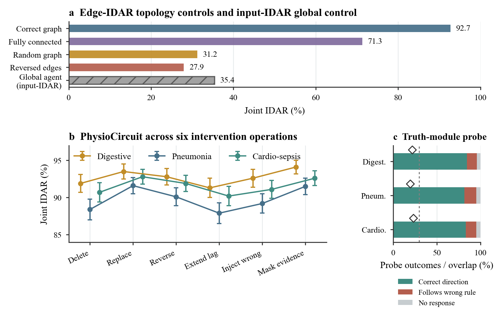
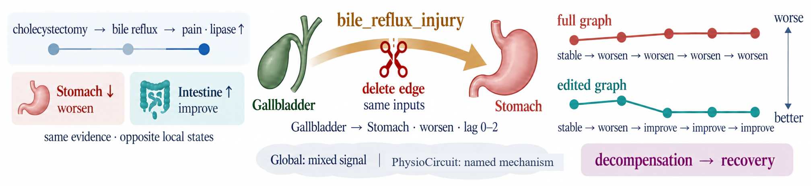
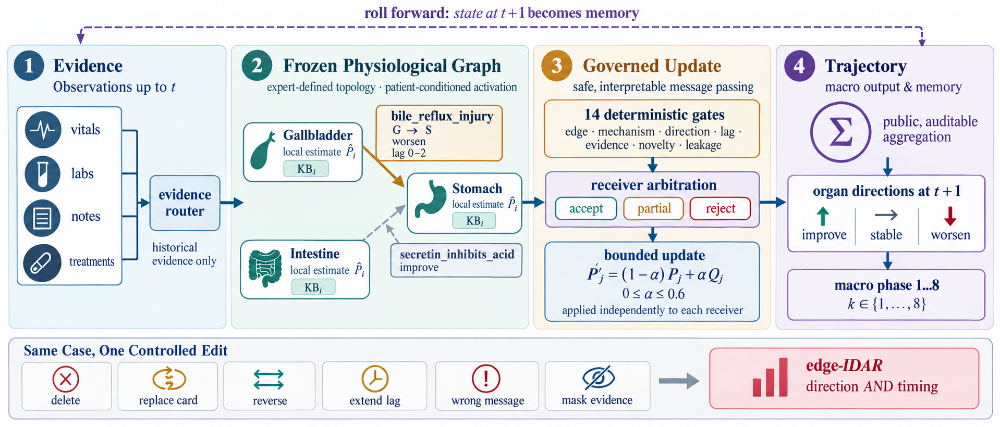
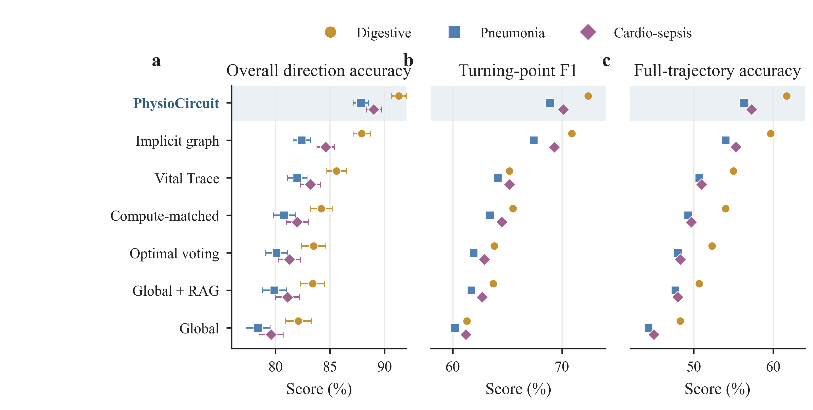
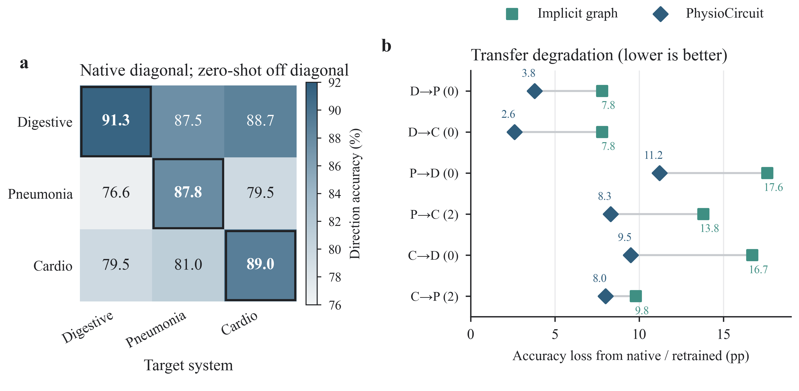

Semantic intervention
Edge edits are evaluated with direction agreement, timing agreement, and their joint IDAR score.
PhysioCircuit - a multi-agent LLM framework with explicit, editable physiological mechanisms.

Do language models forecast patient trajectories by reasoning through physiology, or by fitting surface statistics? We introduce PhysioCircuit, a multi-agent system that represents each organ as an agent and each physiological relation as an editable mechanism card with direction, lag, and evidence. Its expert-defined graph is frozen at inference, enabling controlled edge interventions. We also introduce PhysioCircuit-Bench, a mechanism-controlled benchmark spanning three organ systems, treatment events, and real ICU admissions. We evaluate intervention-direction agreement (IDAR), which requires the affected organ to change in the expected direction within the expected lag window. The expert graph substantially outperforms topology controls on edge-IDAR, including fully connected, random, and reversed graphs. Independent clinician adjudication supports the counterfactual results. PhysioCircuit transfers to new organ systems by configuration alone, without retraining, while preserving inspectable and editable relations.
PhysioCircuit makes physiology the topology. Organ-local predictions are connected by an expert-written graph; typed messages pass deterministic gates before receiving organs accept, partially accept, or reject them and apply bounded residual updates.

One inference step: local organ estimates, typed mechanism messages, deterministic gates, arbitration, bounded updates, and public aggregation.

Edge edits are evaluated with direction agreement, timing agreement, and their joint IDAR score.

PhysioCircuit leads the direction benchmark across digestive, pneumonia, and cardiovascular-sepsis systems.

New organ systems use new graphs and cards while the inference engine remains unchanged.
PhysioCircuit-Bench tests whether a longitudinal forecaster uses the right physiological mechanism, not just whether it predicts the next state. It covers digestive, pneumonia, and cardiovascular-sepsis systems, each with its own organ graph and mechanism cards.
Each system contains 120 synthetic cases: 20 development cases and 100 blind-test cases. Across the three systems, the benchmark includes 1,440 treatment events and 78 mechanism counterfactual pairs. The evaluation measures organ direction and trajectory prediction, treatment response, and intervention-direction agreement (IDAR), which checks both the direction and timing of a response to a named mechanism edit.
Real ICU validation is reported separately using an independently obtained MIMIC-IV archive. The public benchmark files are synthetic.
The arXiv identifier will be added when the preprint is available.
@article{physiocircuit,
title = {Physiology as Topology: Intervenable Organ Graphs for Longitudinal Patient Forecasting},
author = {Liang, Xinru and Chen, Yongchao},
journal = {arXiv preprint},
year = {},
eprint = {}
}